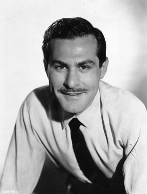
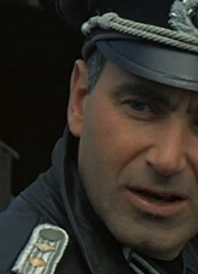

#5541 Die Tollkühnen Männer in ihren fliegenden Kisten
Alternativ: Those Magnificent Men in Their Flying Machines or How I Flew from London to Paris in 25 hours 11 minutes
Auszeichnungen: für 1 Oscars nominiert 1 BAFTA-Awards gewonnen


 IMDB-Wertung: 7.0 / 10
IMDB-Wertung: 7.0 / 10  Metascore: 0
Metascore: 0 
Um zu beweisen, dass Großbritanien die Nummer Eins ist, ruft der englische Zeitungsmagnat Lord Rawnsley ein Preis aus für denjenigen, welcher die Strecke Paris London am schnellsten zurücklegt. Schrullige 60er Jahre Komödie mit großartiger Besetzung.
Jahr: 1965
Dauer: 138 Minuten
FSK: 6
Land: England Studio: 20th Century Fox Home EntertainmentTonspuren:
Untertitel: Deutsch, Englisch,
Auflösung: 1080p (1920x872) Größe: 13312 MB
Genre: Komödie, Abenteuer, Familie
Regisseur: Ken Annakin
Drehbuch: Sam Catlin
Soundtrack:
Darsteller:
 Stuart Whitman als Orvil Newton
Stuart Whitman als Orvil Newton- Sarah Miles als Patricia Rawnsley
 James Fox als Richard Mays
James Fox als Richard Mays- Alberto Sordi als Count Emilio Ponticelli
 Robert Morley als Lord Rawnsley
Robert Morley als Lord Rawnsley Gert Fröbe als Colonel Manfred Von Holstein
Gert Fröbe als Colonel Manfred Von Holstein Jean-Pierre Cassel als Pierre Dubois
Jean-Pierre Cassel als Pierre Dubois- Irina Demick als Brigitte / Ingrid / Marlene / Françoise / Yvette / Betty
 Eric Sykes als Courtney
Eric Sykes als Courtney- Red Skelton als The Neanderthal Man / Passenger on Airport
- Terry-Thomas als Sir Percy Ware-Armitage
- Benny Hill als Fire Chief Perkins
- Yûjirô Ishihara als Yamamoto
- Flora Robson als Mother Superior
-  Sam Wanamaker als George Gruber
 Gordon Jackson als MacDougal
Gordon Jackson als MacDougal John Le Mesurier als French Painter
John Le Mesurier als French Painter- Zena Marshall als Countess Sophia Ponticelli
- Millicent Martin als Airline Hostess
 Eric Pohlmann als Italian Mayor
Eric Pohlmann als Italian Mayor Norman Rossington als Assistant Fire Chief
Norman Rossington als Assistant Fire Chief Graham Stark als Fireman
Graham Stark als Fireman- Tony Hancock als Harry Popperwell
- James Robertson Justice als Narration Spoken by
 Vernon Dobtcheff als Member of the French Team , uncredited
Vernon Dobtcheff als Member of the French Team , uncredited- Max Howard als Boy in Crowd , uncredited
- Judy Huxtable als Girl at Dover Beach , uncredited
 Ferdy Mayne als French Official , uncredited
Ferdy Mayne als French Official , uncredited- Bill Nagy als American Journalist , uncredited
- Nicholas Smith als Fireman , uncredited
- Ronnie Stevens als Reporter , uncredited
-  Karl Michael Vogler als Captain Rumpelstoss
- Eric Barker als French Postman
- Maurice Denham als Trawler Skipper
- Fred Emney als Colonel
- Davy Kaye als Jean
- Jeremy Lloyd als Lieutenant Parsons
- Marjorie Rhodes als Waitress
- William Rushton als Tremayne Gascoyne
- Jimmy Thompson als Photographer
- Michael Trubshawe als Niven
- Lewis Alexander als Journalist , uncredited
- Baxter Annakin als Dog in Airplane , uncredited
- Gerald Campion als Fireman , uncredited
- Pauline Challoner als Ponticelli's Daughter , uncredited
 Pauline Chamberlain als Woman in Dover Scene , uncredited
Pauline Chamberlain als Woman in Dover Scene , uncredited- Robin Chapman als Postman , uncredited
- Arthur Collins als Spectator , uncredited
- Cicely Courtneidge als Muriel, Colonel's Wife , uncredited
- Bill Dean als German Mechanic , uncredited
Datei: X:\1965\Tollkühnen Männer in ihren fliegenden Kisten, Die (1965, FSK6, 1920x872).mkv seit 15.02.2017
Festplatte: HD 1900-1970
 Es gibt insgesamt 25 Filme in der Gruppe '1965'
Es gibt insgesamt 25 Filme in der Gruppe '1965'